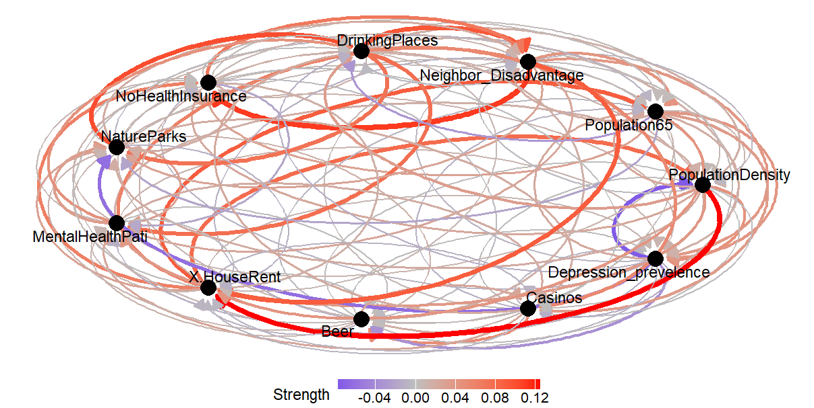
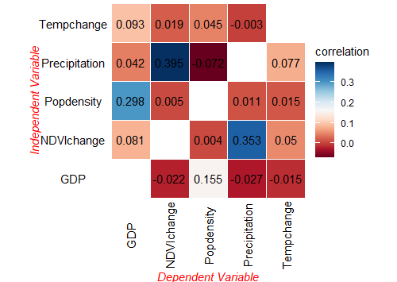

Spatial pattern correlation
Using the same data as the gdverse
opgd vignette. Since the spc function in CISP requires
all input variables to be continuous, only continuous variables are
retained in the data:
ndvi = gdverse::ndvi
ndvi
## # A tibble: 713 × 7
## NDVIchange Climatezone Mining Tempchange Precipitation GDP Popdensity
## <dbl> <chr> <fct> <dbl> <dbl> <dbl> <dbl>
## 1 0.116 Bwk low 0.256 237. 12.6 1.45
## 2 0.0178 Bwk low 0.273 214. 2.69 0.801
## 3 0.138 Bsk low 0.302 449. 20.1 11.5
## 4 0.00439 Bwk low 0.383 213. 0 0.0462
## 5 0.00316 Bwk low 0.357 205. 0 0.0748
## 6 0.00838 Bwk low 0.338 201. 0 0.549
## 7 0.0335 Bwk low 0.296 210. 11.9 1.63
## 8 0.0387 Bwk low 0.230 236. 30.2 4.99
## 9 0.0882 Bsk low 0.214 342. 241 20.0
## 10 0.0690 Bsk low 0.245 379. 42.0 7.50
## # ℹ 703 more rows
ndvi = dplyr::select(ndvi,-c(Climatezone,Mining))
ndvi
## # A tibble: 713 × 5
## NDVIchange Tempchange Precipitation GDP Popdensity
## <dbl> <dbl> <dbl> <dbl> <dbl>
## 1 0.116 0.256 237. 12.6 1.45
## 2 0.0178 0.273 214. 2.69 0.801
## 3 0.138 0.302 449. 20.1 11.5
## 4 0.00439 0.383 213. 0 0.0462
## 5 0.00316 0.357 205. 0 0.0748
## 6 0.00838 0.338 201. 0 0.549
## 7 0.0335 0.296 210. 11.9 1.63
## 8 0.0387 0.230 236. 30.2 4.99
## 9 0.0882 0.214 342. 241 20.0
## 10 0.0690 0.245 379. 42.0 7.50
## # ℹ 703 more rows
system.time({
g = cisp::spc(ndvi,cores = 6)
})
## user system elapsed
## 0.84 0.20 21.50
g
## *** Spatial Pattern Correlation
##
## | xv | yv | correlation |
## |:-------------:|:-------------:|:-----------:|
## | Precipitation | NDVIchange | 0.39517 |
## | Tempchange | NDVIchange | 0.01905 |
## | Popdensity | NDVIchange | 0.00483 |
## | GDP | NDVIchange | -0.02158 |
## | Precipitation | Tempchange | 0.07679 |
## | NDVIchange | Tempchange | 0.04977 |
## | Popdensity | Tempchange | 0.01516 |
## | GDP | Tempchange | -0.01466 |
## | NDVIchange | Precipitation | 0.35303 |
## | Popdensity | Precipitation | 0.01140 |
## | Tempchange | Precipitation | -0.00265 |
## | GDP | Precipitation | -0.02745 |
## | Popdensity | GDP | 0.29824 |
## | Tempchange | GDP | 0.09282 |
## | NDVIchange | GDP | 0.08061 |
## | Precipitation | GDP | 0.04213 |
## | GDP | Popdensity | 0.15481 |
## | Tempchange | Popdensity | 0.04483 |
## | NDVIchange | Popdensity | 0.00442 |
## | Precipitation | Popdensity | -0.07190 |The results are visualized in a default network graph style:
plot(g)

Figure 1. Spatial Pattern
Correlation Network Visualization Results
But the results can also be plotted using the classic correlation coefficient matrix visualization style:
plot(g,style = "matrix")

Figure 2. Spatial Pattern
Correlation Matrix Visualization Results